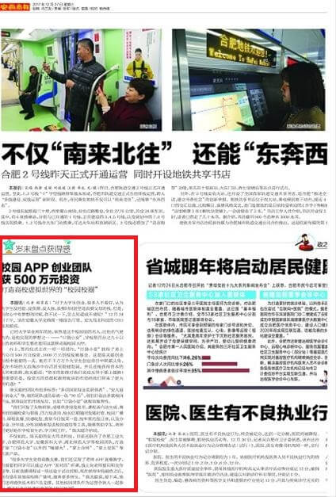
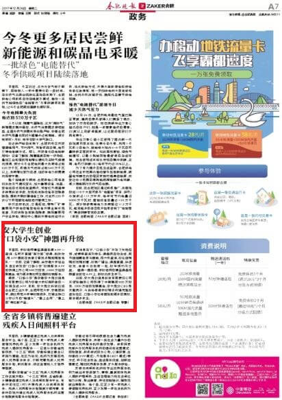
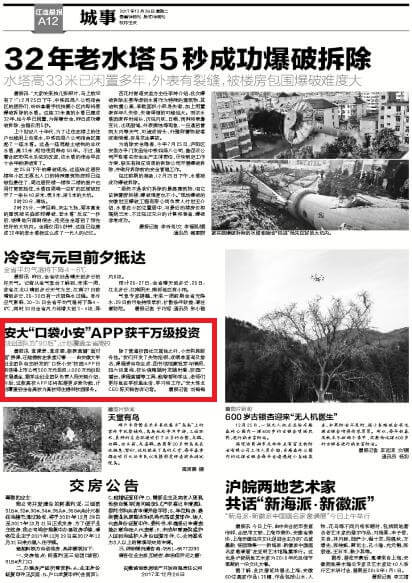
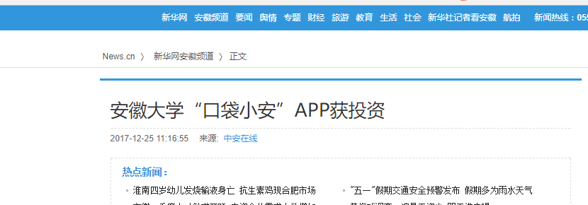
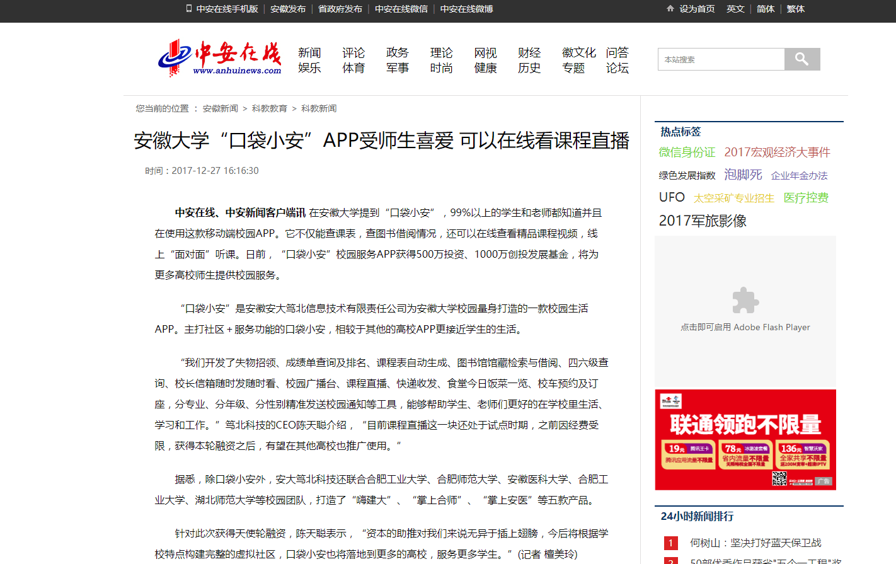

打造高校虚拟世界的“校园校圈”
-

本报讯（记者 胡霈霖）“对于大学生创业，很多人不看好，认为大学生没经验、没资源、没人脉，浪费时间甚至是浪费父母的钱。但是，当你心中有梦想的时候，你不试一下，怎么知道成不成呢？”12月24日下午，坐在安徽大学文典阁一楼报告厅里，安大笃北科技的CEO陈天聪说。
已经大学毕业两年的他，依然是这个校园里的名人，比他名气更大的，是他实现的梦想之一——“口袋小安”，学校里百分之九十以上的老师和学生都在使用这款移动端校园APP。
台上，签约仪式正在一项一项进行，“口袋小安”获得了某上市公司500万元投资、1000万元创投发展基金。这是陈天聪创业历程中重要的一天。能在千千万万个大学生创业项目中崭露头角，又在市场的大浪淘沙中存活甚至稳健发展，并且还能获得资本的认同和助推，陈天聪说：“资本的助推对我们来说无异于插上翅膀！更重要的是，投资方的资源和教育板块的布局给我们带来了更大的机遇！”
陈天聪的团队有很多标签：“多项国家级金奖获得者”、“安大最牛创业人”等，他的团队成员是清一色“90后”，他们打造出多款校园产品，获得良好的市场反应。比如“口袋小安”就极具服务性。
“我们开发了失物招领、成绩单查询及排名、课程表自动生成、图书馆馆藏检索与借阅、四六级查询、校长信箱随时发随时看、校园广播台、课程直播、快递收发、食堂今日饭菜一览、校车预约及订座，以及分专业、分年级、分性别精准发送校园通知等工具，能够帮助学生、老师们更好地在学校里生活、学习和工作。”陈天聪介绍说。
不仅如此，陈天聪的安大笃北科技，目前还联合了合肥工业大学、合肥师范大学、安徽医科大学、湖北师范大学等校园团队，打造了除“口袋小安”以外的“嗨建大”、“掌上合师”、“掌上安医”等五款产品。“很多大学生觉得高数太难，我们还实现了老师APP直播教学，有需要的同学可以通过APP‘面对面’听课，线上向老师提问和交作业等。目前直播课程这一块还处于试点时期，现在获得本轮融资之后，还有望在其他高校推广使用，服务更多师生。”陈天聪说，接下来，他们还将提供技术和产品支撑，其他校园团队作为运营合伙人一起参与，携手打造高校虚拟世界的“校园校圈”。
{kind=link}
-

本报讯（记者 黎静）学校老师精品课程资源 APP 一键查询；名师开直播 " 面对面 " 授课、批改作业；用 APP 提前在食堂订餐饭点随到随取免排队 …… 日前，记者了解到，由安徽大学创业团队自主研发的 " 口袋小安 " 校园服务 APP 日前获得上市公司 500 万投资、1000 万创投发展基金，将为更多高校师生提供校园服务。
据悉，" 口袋小安 " 是安徽安大笃北信息技术有限责任公司为安徽大学校园所做的一款校园生活 APP，目前，安大笃北科技已经联合合肥工业大学、合肥师范大学、安徽医科大学、合肥工业大学、湖北师范大学等校园团队，打造出除口袋小安以外的 " 嗨建大 "、" 掌上合师 "、" 掌上安医 " 等五款产品。
好消息在于，" 口袋小安 " 开发了失物招领、成绩单查询及排名、课程表自动生成、图书馆馆藏检索与借阅、四六级查询、校长信箱随时发随时看、校园广播台、课程直播、快递收发、食堂今日饭菜一览、校车预约及订座。
" 我们能分专业、分年级、分性别精准发送校园通知等工具，帮助学生、老师们更好的在学校里生活、学习和工作。" 安大笃北 CEO 陈天聪告诉记者，对于学生这个群体来说，最实用的莫过于课程群聊和直播功能。
" 学校的选修课通常是来自各个院系的学生，但基本有着共同兴趣，通过小安 APP，选择同一课程的同学可以自动进入讨论组，互相交流学习。"
值得一提的是，对于备受学生 " 吐槽 " 的高数难问题，小安也给同学们带来了福利。学校老师的精品课程视频都会放在 APP 上，供校内学生学习。另外还有高数老师通过 APP 直播教学，提前在小安上发布，有需要的同学就可以通过 APP" 面对面 " 听课，线上提问老师，交作业等。
日前，安大笃北信息科技有限责任公司天使轮融资公司获得了中南集团 500 万投资，1000 万创投发展基金，陈天聪表示，今后将根据学校特点构建完整的虚拟社区，口袋小安也将落地到更多的高校，服务更多学生。
{kind=link}
创业团队为“90后”，计划覆盖全省高校
-

晨报讯（记者 刘梅梅） 查课表、查成绩、教授直播“面对面”授课、还能提前在食堂订餐……由安徽大学创业团队自主研发的“口袋小安”校园APP日前获得上市公司500万元投资、1000万元创投发展基金，据学生创业团队负责人陈天聪介绍，今后，这款高校APP还将拓展更多新功能，计划覆盖到全省高校为高校师生提供校园服务。
除了普通校园社交属性之外，小安极具服务性。“我们开发了失物招领、成绩单查询及排名、课程表自动生成、图书馆馆藏检索与借阅、四六级查询、校长信箱随时发随时看、校园广播台、课程直播等工具，能够帮助学生、老师们更好地在学校里生活、学习和工作。”安大笃北CEO陈天聪告诉记者。
{kind=link}
-

能查课表，查图书借阅情况，还可以在线查看精品课程视频，线上“面对面”听课。日前，安徽大学“口袋小安”校园服务APP获得500万投资、1000万创投发展基金，将为更多高校师生提供校园服务。
“口袋小安”是安徽安大笃北信息技术有限责任公司为安徽大学校园量身打造的一款校园生活APP。主打社区＋服务功能的口袋小安，相较于其他的高校APP更接近学生的生活。
“我们开发了失物招领、成绩单查询及排名、课程表自动生成、图书馆馆藏检索与借阅、四六级查询、校长信箱随时发随时看、校园广播台、课程直播、快递收发、食堂今日饭菜一览、校车预约及订座，分专业、分年级、分性别精准发送校园通知等工具，能够帮助学生、老师们更好的在学校里生活、学习和工作。”笃北科技的CEO陈天聪介绍，“目前课程直播这一块还处于试点时期，之前因经费受限，获得本轮融资之后，有望在其他高校也推广使用。”
据悉，除口袋小安外，安大笃北科技还联合合肥工业大学、合肥师范大学、安徽医科大学、合肥工业大学、湖北师范大学等校园团队，打造了“嗨建大”、“掌上合师”、“掌上安医”等五款产品。
{kind=link}
-

央广网合肥12月25日消息（记者 鲍玉婵）如果问大家对大学生创业怎么看，能成吗？靠谱吗？相信大部分人对此都持消极态度：仅有想法而已。但在安徽大学提到“口袋小安”，百分之九十九以上的学生和教师都知道并且在使用这款移动端校园APP，日前，安大笃北信息科技有限责任公司天使轮融资签约仪式在安徽大学文典阁举行。未来，“口袋小安”将落地更多高校，服务更多师生。
>
此次天使轮融资公司获得了上市公司500万投资，1000万创投发展基金，更重要的是，未来，我们将依托上市公司的平台资源和教育版块的布局为广大师生提供更为便捷的校园服务。”笃北科技的CEO陈天聪说。
记者在采访中了解到，截至目前，安大笃北科技已经联合合肥工业大学、合肥师范大学、安徽医科大学、合肥工业大学、湖北师范大学等校园团队，打造出除口袋小安以外的“嗨建大”、“掌上合师”、“掌上安医”等五款产品。
可以在线看课程直播
-

本报讯（记者 胡霈霖）“对于大学生创业，很多人不看好，认为大学生没经验、没资源、没人脉，浪费时间甚至是浪费父母的钱。但是，当你心中有梦想的时候，你不试一下，怎么知道成不成呢？”12月24日下午，坐在安徽大学文典阁一楼报告厅里，安大笃北科技的CEO陈天聪说。
已经大学毕业两年的他，依然是这个校园里的名人，比他名气更大的，是他实现的梦想之一——“口袋小安”，学校里百分之九十以上的老师和学生都在使用这款移动端校园APP。
台上，签约仪式正在一项一项进行，“口袋小安”获得了某上市公司500万元投资、1000万元创投发展基金。这是陈天聪创业历程中重要的一天。能在千千万万个大学生创业项目中崭露头角，又在市场的大浪淘沙中存活甚至稳健发展，并且还能获得资本的认同和助推，陈天聪说：“资本的助推对我们来说无异于插上翅膀！更重要的是，投资方的资源和教育板块的布局给我们带来了更大的机遇！”
陈天聪的团队有很多标签：“多项国家级金奖获得者”、“安大最牛创业人”等，他的团队成员是清一色“90后”，他们打造出多款校园产品，获得良好的市场反应。比如“口袋小安”就极具服务性。
“我们开发了失物招领、成绩单查询及排名、课程表自动生成、图书馆馆藏检索与借阅、四六级查询、校长信箱随时发随时看、校园广播台、课程直播、快递收发、食堂今日饭菜一览、校车预约及订座，以及分专业、分年级、分性别精准发送校园通知等工具，能够帮助学生、老师们更好地在学校里生活、学习和工作。”陈天聪介绍说。
不仅如此，陈天聪的安大笃北科技，目前还联合了合肥工业大学、合肥师范大学、安徽医科大学、湖北师范大学等校园团队，打造了除“口袋小安”以外的“嗨建大”、“掌上合师”、“掌上安医”等五款产品。“很多大学生觉得高数太难，我们还实现了老师APP直播教学，有需要的同学可以通过APP‘面对面’听课，线上向老师提问和交作业等。目前直播课程这一块还处于试点时期，现在获得本轮融资之后，还有望在其他高校推广使用，服务更多师生。”陈天聪说，接下来，他们还将提供技术和产品支撑，其他校园团队作为运营合伙人一起参与，携手打造高校虚拟世界的“校园校圈”。
{kind=link}